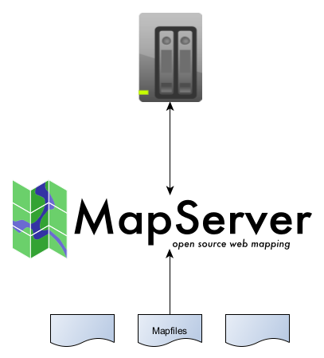

Securing MapServer Deployments¶
- date:
2022-03-28 19:00
- author:
geographika
- status:
draft
Please email any comments or corrections to blog@geographika.net
Introduction¶
The aim of this page is to summarise the available MapServer security options in a single location, and to act as a rough checklist when reviewing MapServer deployments. I’ve tried to link to the official documentation as much as possible, and to make updates to these sections where appropriate.
Securing a MapServer deployment can be implemented at three levels - the web server-level, the MapServer application-level, and at the Mapfile-level. There are plenty of resources on how to securely configure servers, so the focus of this page is on MapServer specific security steps.
My experience with large MapServer deployments has typically been on Windows servers, using data from MicroSoft SQL Server, so there is a focus on those aspects in this article.
Web Server-level Security¶
General information on securing web servers, such as using firewalls, request filtering, disabling ports etc. is outside the scope of this article. As MapServer is a CGI application (it runs as an executable natively outside of the web server), particular attention should be made on how best to secure CGI/FastCGI programs on the server.
For details on Microsoft’s IIS see Securing MapServer in IIS. The FastCGI docs have some further details on running MapServer using Apache.
When using CGI, the web server launches the MapServer executable, passes data from the web request, and then returns the output from the MapServer executable. When MapServer is run using FastCGI, one or more MapServer executables are kept running in memory to process requests from the web server.
MapServer CGI Permissions¶
The user account used to launch MapServer should only have the minimum permissions required to support the web application requirements. A new user account should be created to run MapServer so permissions can be created specifically for the application.
The account used to run MapServer will require read-access to at least the following:
MapServer binaries, libraries, and their dependencies
MapServer CONFIG file
Data sources, such as those stored in SHAPEPATH
MapServer only serves data, rather than allowing editing, which limits security risk to data leaking out, rather than data being deleted or corrupted. However, whilst MapServer does not support data updates, it does requires write-access on the server for the following cases:
writing to a LOG file
MAP
CONFIG "MS_ERRORFILE" "/var/log/mapserver/ms_error.log"
creating temporary files. These files are written to one of the following two locations (defaulting to the operating system default temp folders if they are not supplied):
WEB TEMPPATH (alternatively this can be set in a
MS_TEMPPATHenvironment variable)
Temporary files are created by MapServer in cases such as when applying external SLD files to layers, creating zip files for downloads in an OUTPUTFORMAT,
and saving temporary WMS and WFS files from other servers.
See MS RFC 66: Better handling of temporary files for more details on temp files.
MapServer-level Security¶
Once the web server is secured, further security can be applied at the MapServer application level.
MapServer Codebase¶
Over the years MapServer has been subject to several external security audits. The codebase is open source which also means it is regularly scanned by tools looking for security holes (by both good and bad actors). These reviews sometimes raises CVEs (Common Vulnerabilities and Exposures). The full list of MapServer CVEs can be found on CVE Details. Any widely used software CVEs, so having CVEs is not a sign that MapServer is insecure (for example see CVEs for ArcGIS Server).
As noted on the Reporting Bugs page, security and vulnerability reports should not be submitted as GitHub Issues but instead please sent via email to mapserver-security nospam @ osgeo.org (remove the blanks and “nospam”).
Limiting Mapfile Access¶
From a 2021 MapServer Security Advisory
The MapServer CGI, by default, will happily attempt to process any mapfile it is asked to. While this might be desirable in a development environment, it is not acceptable for public-facing installations.
See the Limit Mapfile Access page for how to limit access. There are also further details in MS RFC 56: Tighten control of access to mapfiles and templates
Environment Variables¶
MapServer has a number of Environment Variables that can be set to limit unwanted use of MapServer. Below is a brief summary of the security-related environment variables:
MS_MAP_PATTERN- this can be set to a regular expression, and only paths that match this regular expression will be accepted by MapServer in the “&map=C:/Maps/test.map” querystring.MS_MAP_NO_PATH- when this is set to any value e.g.MS_MAP_NO_PATH=1orMS_MAP_NO_PATH=TRUEthen a path to a Mapfile can no longer be sent directly to MapServer in a querystring e.g.map=C:/Maps/test.map. Mapfiles must be referenced using an environment name e.g.MY_MAPFILE=C:/Maps/test.mapand then referenced usingmap=MY_MAPFILE.MS_MAP_BAD_PATTERN- defaults to[/\\]{2}|[/\\]?\\.+[/\\]|,to prevent path traversal, and accessing files outside of the intended public Mapfiles.MS_MAPFILE_PATTERN- defaults to'\.map$'- only Mapfiles files with the extension of.mapwill be read by MapServerMS_TEMPPATH- this can be set globally to ensure MapServer temporary files are all written to the same location
Several of the above environment variables rely on regular expresssions.
Some people, when confronted with a problem, think “I know, I’ll use regular expressions.” Now they have two problems.
Jamie Zawinski
Regular expressions are hard to write (at least for myself), and hard to test. I’d recommend setting explicit MAP files where possible using the new CONFIG file
discussed below. In addition different builds of MapServer can use different regex libraries, for example Windows and Linux builds, with subtle differences.
This goes against the idea of Mapfiles being fully portable between systems.
If your application however does need to use Mapfiles from many different locations, or with dynamic names, I’ve found https://regex101.com/ to be incredibly useful when working with regular expressions, in particular its debugging option.
Config File¶
In MapServer 8.0 a new global Configuration File was introduced.
The configuration file makes it easier to manage environment variables in a single place, and can be easily generated for different environments such as development, staging, and production.
Only a single environment variable MAPSERVER_CONFIG_FILE (pointing to the configuration file) needs to be set. Access to the configuration file can be restricted
to an administrator, whilst allowing editing of Mapfiles for a wider group of users.
Note
Make sure this configuration files is not in a publicly accessible web folder!
Without providing a valid path in MAPSERVER_CONFIG_FILE, or without a config file at the default location of ${install dir}/etc/mapserver.conf MapServer will refuse
to run.
Maps¶
The MAPS section of a config file allows a list of keys and Mapfile locations which can be processed by MapServer. If there is no requirement
for processing Mapfiles from different locations, or dynamic names then listing all relevant application Mapfiles in this section can greatly reduce the risk
of loading malicious Mapfiles.
MAPS
MAP1 "/opt/mapserver/myapp/map1.map"
MAP2 "/opt/mapserver/myapp/map2.map"
END
Using keys and environment variables avoids exposing the path to your Mapfiles (which in turn gives away the OS of the server, and possible folder structures).
Plugins¶
A key new feature of the config file is that MapServer LAYER PLUGINs can now be restricted. For example until MapServer 8.0 a MS SQL layer would use the following settings:
CONNECTIONTYPE PLUGIN
PLUGIN "C:\MapServer\bin\ms\plugins\mssql2008\msplugin_mssql2008.dll"
CONNECTION "Server=.\MSSQLSERVER2008;Database=Maps;Integrated Security=true"
MapServer will then load this DLL to process the layer. If the DLL is compromised, or the PLUGIN location modified to point to a different DLL
then this opens up a security risk.
The new configuration file now limits which DLLs can be loaded by MapServer, and the PLUGIN accepts a key rather than a file location:
CONFIG
PLUGINS
"mssql" "C:\MapServer\bin\ms\plugins\mssql2008\msplugin_mssql2008.dll"
END
END
Now the layer in the Mapfile can be configured using:
CONNECTIONTYPE PLUGIN
PLUGIN "mssql" # key from the config file
CONNECTION "Server=.\MSSQLSERVER2008;Database=Maps;Integrated Security=true"
Whilst the DLL could still be compromised, or the CONFIG file modified to point to a different DLL, there is no longer a risk of an arbitrary Mapfile being processed by MapServer referencing a DLL that may not even be on the same machine as MapServer.
Mapfile-level Security¶
The final level for hardening a MapServer deployment is within Mapfiles themselves. Some suggestions are given below. In a production environment Mapfiles should ideally be set to read-only to avoid modifications.
Validation¶
Encrypting Connection Strings¶
As Mapfiles are plain text, it is insecure to store details such as passwords in them. MapServer includes a utility program msencrypt to encrypt sensitive data.
MS RFC 18: Encryption of passwords in mapfiles notes however that this is more obfuscation than secure:
Since the user running the web server (and MapServer) needs to have permissions to read the key, any web server process or user with permissions to read the key can decrypt the passwords using a trivial program
As of MapServer version 8.0 the MS_ENCRYPTION_KEY environment variable
can be stored in the new configuration file. Make sure the key file is not in a location where it can be accessed via a web request!
An example of an encrypted connection string is shown below:
MAP
CONFIG "MS_ENCRYPTION_KEY" "E:/temp/mykey.txt" # this can now be stored in the configuration file
LAYER
NAME "provinces"
TYPE POLYGON
CONNECTIONTYPE POSTGIS
# unsecure connection string :-(
#CONNECTION "host=127.0.0.1 dbname=gmap user=postgres password=mypassword port=5432"
# connection string with encrypted password :-)
CONNECTION "host=127.0.0.1 dbname=gmap user=postgres password={3656026A23DBAFC04C402EDFAB7CE714} port=5432"
DATA "the_geom FROM province using SRID=3978"
STATUS DEFAULT
CLASS
NAME "Countries"
STYLE
COLOR 255 0 0
END
END
END
END
Ideally an alternative connection method would be used which does not rely on storing a password, encrypted or not, in a Mapfile. Microsoft SQL Server can use Trusted Connections - so called because SQL Server trusts the credentials provided by Windows, rather than SQL Server authentication which requires a user name and password to be sent for each request.
Windows Authentication is more secure than SQL Server Authentication, and allows for account lockout, password expiration, and password policy enforcement.
Access by IP Addresses¶
IP restrictions can be handled at the firewall or server-level, but can also be implemented in Mapfiles. See MS RFC 90: Enable/Disable Layers in OGC Web Services by IP Lists for details. Mapfile restrictions are probably better suited for user groups within a network rather than to restrict publicly available services.
IP restrictions are implemented by setting a layer’s ows_allowed_ip_list metadata value. For example:
LAYER
METADATA
"ows_allowed_ip_list" "123.45.67.89 11.22.33.44"
END
END
Note this can also be set at the map-level, and specific IP addresses or ranges blocked:
MAP
WEB
METADATA
"ows_allowed_ip_list" "123.45.67.89 !11.22.33.44"
"ows_denied_ip_list" "11.22.33.44" # an alternative to the above
END
END
END
OWS Services¶
If an application only requires certain OWS services to be used e.g. WMS is required, but not WFS, then these can be restricted. This can be done at
both the MAP and LAYER levels using *_enable_request metadata keys. See the WMS Server docs
and WFS Server docs.
For example:
MAP
WEB
METADATA
"ows_enable_request" "*" # necessary to allow any ows requests
END
END
LAYER
NAME "road"
DATA "road"
TEMPLATE "ttt"
METADATA
"ows_enable_request" "GetFeatureInfo"
"wms_enable_request" "GetCapabilities !GetMap"
END
If a value is not set for ows_enable_request (or wms_enable_request or wfs_enable_request) no OWS services will be available. If no OWS services are required
then this will reduce the attack surface. See MS RFC 67: Enable/Disable Layers in OGC Web Services for further details.
CGI Modes¶
MapServer is now over 25 years old, and existed well before any OWS services were implemented. Prior to OWS all access to MapServer was by controlled using different “modes”, passed to MapServer as a parameter. These are documented on the MapServer CGI Controls page.
These are all still available today, however if they are not used then it is prudent to disable them to reduce the attack surface of MapServer.
To disable the CGI modes the ms_enable_modes metadata option can be set:
WEB
METADATA
# disable all modes - this will still allow all WxS services to run without issue
"ms_enable_modes" "!*"
END
END
Use the asterisk “*” to specify all modes and a preceding exclamation sign “!” to negate the given condition. Further details are included in as part of RFC 90, in the Disable the stock CGI operations section.
Restricting Access to Data Different Users¶
This is not something built-in to MapServer, but there are a few different approaches on restricting which users can access which layers in a Mapfile:
Generate a Mapfile for specific user groups, and manage access to layers in this Mapfile at the application or web server layer (either as a once off process or by generating Mapfiles on-the-fly)
Verify all requests using an intermediary proxy server, and handle authentication outside of MapServer
Use security tokens and add
WHEREclauses in layer’sDATAsettings to ensure data is only returned if the security token exists in the database
Denial of Service Attacks¶
MapServer can be prone to DoS attacks - when the server is overwhelmed with requests, or hit with requests that trigger processor-intensive responses. Overloading the server can also occur without malicious intent when applications don’t limit the amount of data or frequency of requests from users. Many of these attacks should be blocked by server-level security, but it is good practice to limit how much data a user can request.
A few options are listed below:
Set a MAXSIZE value. The default value is 4096 (up to 4096 pixels in both width and height), however if your application is only going to be generating 256x256 tiles you could restrict this with the following:
MAP MAXSIZE 256
Set MAXSCALEDENOM - this can be used to prevent a user zooming too far out, which may result in retrieving lots of features from a database
wfs_maxfeatures - this can be used to limit the number of features returned by the WFS server
Thanks for taking the time to read this article. If you have any further suggestions, best-practices, or notice any errors in the above, please let me know via blog@geographika.net